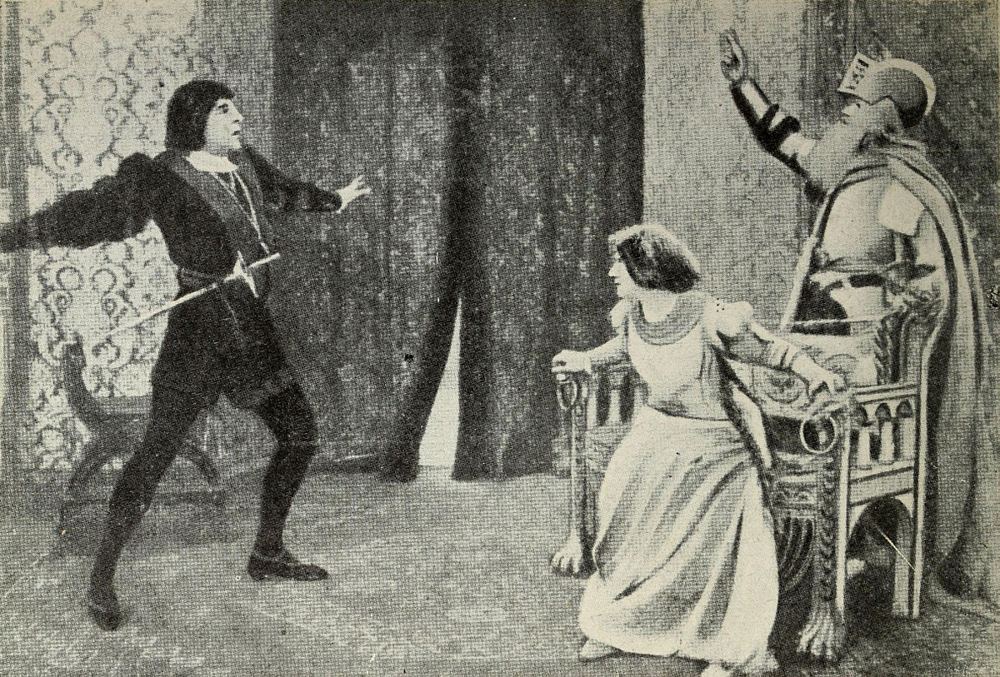
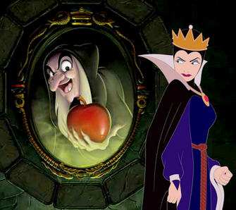

Though separated by many centuries, cultural shifts, and genres, the timeless tale of Hamlet and the widely-known story of Snow White share common themes of justice, resilience, and the triumph over adversity, especially adversity faced due to an “evil” step-parent. Hamlet and Snow White are both classic literary characters who have many differences as well as some similarities. Hamlet is a prince who is consumed by anger and desire for revenge after his father's murder, while Snow White is a princess who is persecuted by her evil stepmother but remains kind and gentle. Hamlet is isolated and struggles to trust others, while Snow White has a supportive group of dwarfs who help her through her difficulties. Despite their differences, both characters are driven by a sense of justice and face challenges and obstacles on their journey to triumph over adversity. Hamlet and Snow White both struggle with their step parents in their respective stories. In Hamlet's case, his stepfather Claudius has murdered his father and taken over the throne, causing Hamlet to experience a deep sense of betrayal and anger. Snow White, on the other hand, is persecuted by her stepmother who is jealous of her beauty and wants her dead. Both characters face difficult and dangerous situations as a result of their step parents' actions, and both must find a way to overcome these challenges in order to survive and triumph. Despite the differences in their specific situations, both Hamlet and Snow White show resilience and determination in the face of adversity, proving that they are strong and capable characters.

Hamlet's relationship with his stepfather Claudius is complex and fraught with tension. After Claudius murders Hamlet's father and takes over the throne, Hamlet is consumed by anger and a desire for revenge. He mistrusts Claudius and is unable to forgive him for his betrayal, leading to a strained and hostile relationship between the two. Despite this, Claudius also serves as a foil for Hamlet, highlighting the prince's own struggles and insecurities. In the end, their relationship ends in tragedy as Hamlet ultimately kills Claudius in revenge for his father's death. Overall, Hamlet and Claudius's relationship is marked by betrayal, mistrust, and a desire for retribution. In Act I, Scene 2 of Hamlet, the prince says to Claudius, "The serpent that did sting thy father’s life/ Now wears his crown." This quote shows the strained and hostile nature of Hamlet's relationship with Claudius. Despite being a prince, Hamlet does not feel the need to show deference to Claudius and instead asserts his own autonomy and determination. The language used, such as referring to Claudius as a “serpent”, shows that Hamlet is not only aware Claudius murdered his father, but also that it was purely a power play. Overall, this quote reveals the tension and mistrust between the two characters. This message is conveyed all throughout the play, with Prince Hamlet being distrustful of Claudius even before finding out his role in the previous King’s death, which only worsened what was already a strained relationship. This is also one of the earliest recorded occurrences of what is now the extremely popular evil step-parent trope, however, in Hamlet’s version of this trope, it’s much less one-dimensional than other well-known versions such as many Disney stories. In the play, you could make the argument that Hamlet himself is not such a great person, he was abusive to Ophelia, or that the old king was abusive to Gertrude, and so on. There are many different ways to interpret the play which allows for a world that isn’t so clearly black-and-white.
In the story of Snow White and the Seven Dwarfs, Snow White's relationship with her stepmother is a tumultuous one. Snow White's stepmother is a vain and cruel woman who is jealous of Snow White's beauty. Just because a talking mirror tells her that she (the Queen) isn’t the fairest in all the land, she becomes increasingly jealous and paranoid as Snow White grows up, eventually ordering a huntsman to kill Snow White and bring back her heart as proof of the deed. Snow White is able to escape and finds refuge with the seven dwarfs, but her stepmother continues to plot against her and eventually succeeds in tricking Snow White into biting into a poisoned apple. However, Snow White is eventually revived by a prince who gives her a true love's kiss. Overall, Snow White's relationship with her stepmother is one of fear and mistrust, and quite possibly the biggest example of an “overreaction”. In the 1992 animated film Snow White, Queen Grimhilde can be seen asking the question “Magic Mirror on the wall, who is the fairest one of all?” twice. The first time, she’s told that it’s her, and the second time she’s told that Snow White has surpassed the Queen’s beauty. Snow White can also be heard saying that she doesn’t even know why the Queen hates her in many retellings.As discussed above, Hamlet’s portrayal of Claudius leaves room to be interpreted in numerous different ways, the original Snow White animated movie has a more black-and-white view of the world. It doesn’t really have much depth to the characters, with Snow White being unconditionally perfect despite what happens, and Queen Grimhilde being portrayed as unreasonably evil. This is most likely why other retellings such as the show Once Upon a Time include more to the backstory to justify their feud. This isn’t necessarily a bad thing though, as a simpler story has the potential to reach a wider audience.

So what do the stories of Hamlet and Snow White represent about the evolution of literature through time? In Hamlet, Prince Hamlet dislike for Claudius develops into murderous hatred when Hamlet discovers that Claudius was responsible for his fathers’ death. Claudius is depicted as a cunning and manipulative figure who has married Hamlet's mother and taken the throne of Denmark. However, it is possible to argue that Claudius is actually a good guy, at least in some ways. One reason to think this is that Claudius genuinely cares for Hamlet's mother, Gertrude. Throughout the play, he is shown to be devoted to her and to be concerned about her well-being. For example, in Act III, Scene 4, Claudius says to Hamlet, "I must be cruel only to be kind" (3.4.182), indicating that he believes his harsh treatment of Hamlet is ultimately for Gertrude's benefit. This suggests that Claudius has some measure of compassion and empathy, even if it is misguided. Additionally, it could be argued that Claudius is a good guy because he is a skilled politician and leader. Despite the fact that he has seized the throne through murder, he is able to maintain order in Denmark and keep the country from descending into chaos. In Act I, Scene 2, he says to the court, "Though yet of Hamlet our dear brother's death / The memory be green, and that it us befitted / To bear our hearts in grief and our whole kingdom / To be contracted in one brow of woe" (1.2.1-4), showing that he is aware of the need to maintain stability and unity in the face of tragedy. While murder is generally frowned upon, it is clear that Claudius isn’t evil for evils’ sake, even from the perspective of Hamlet as the protagonist. On the other hand, Queen Grimhilde is a vain and jealous woman with not much backstory or or reasoning. It is difficult to say exactly what these works tell us about how historical views changed or stayed the same, as the interpretation of literature is often a subjective process and can vary from person to person. Lots of more modern stories (modern relative to Hamlet anyways) have a much more clear picture of right vs. wrong, defining the roles of the characters right from the start; a can’t-do-wrong protagonist and an evil-because-they-feel-like-it antagonist. This isn’t unique to Disney stories, however; It starts with fairy tales from the Brothers Grimm and continues with the Golden Age of DC Comics. Shakespeare’s stories, on the other hand, often have more detailed antagonists.
There has been quite a change in storytelling between the time of when Hamlet was written, and the era in which Snow White was written. Stories by Shakespeare often take multiple reads to fully understand, whereas more modern stories are simpler. Analyzing the differences in language and scenes this presents allows us to reflect on some interesting questions, such as: